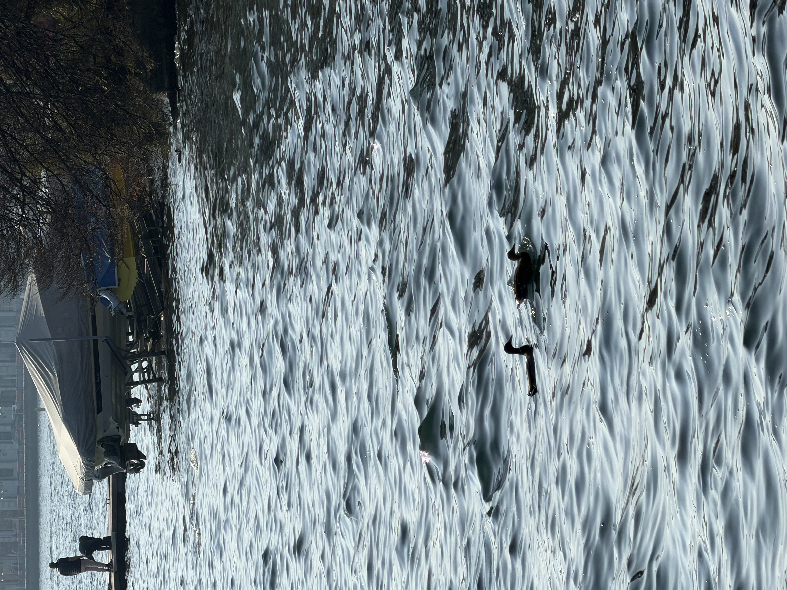
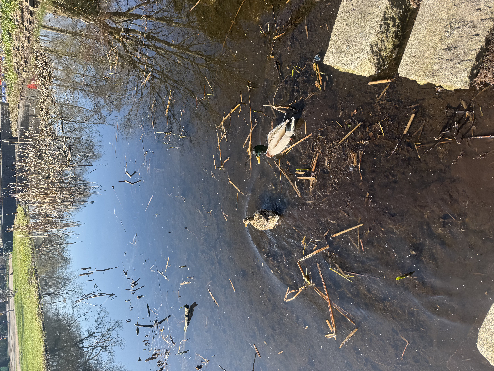
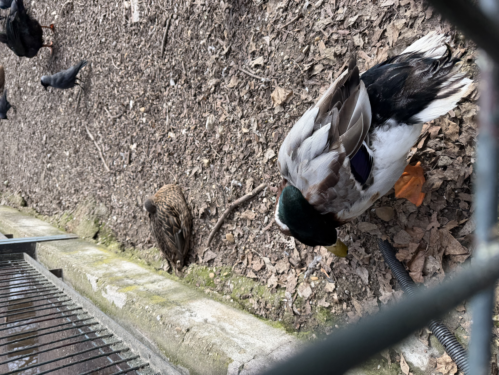
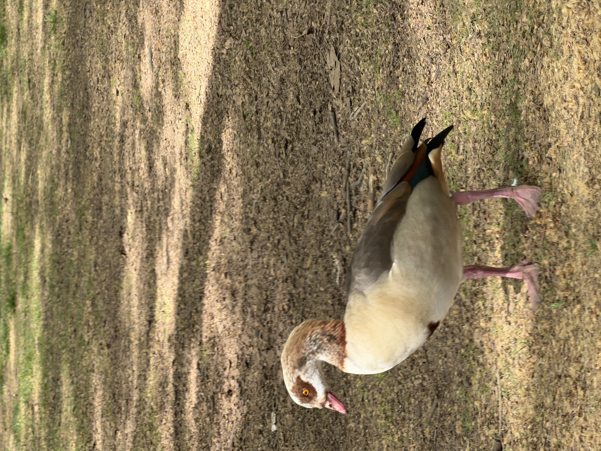
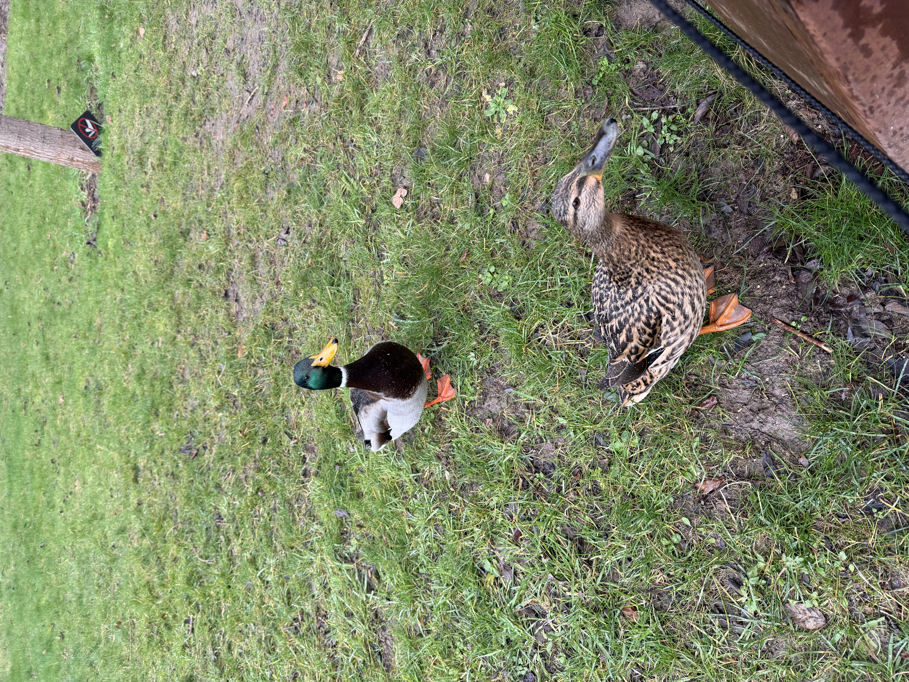
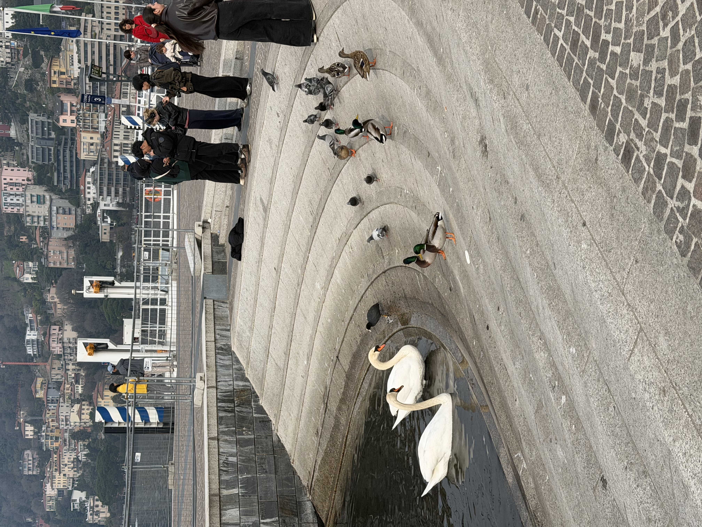
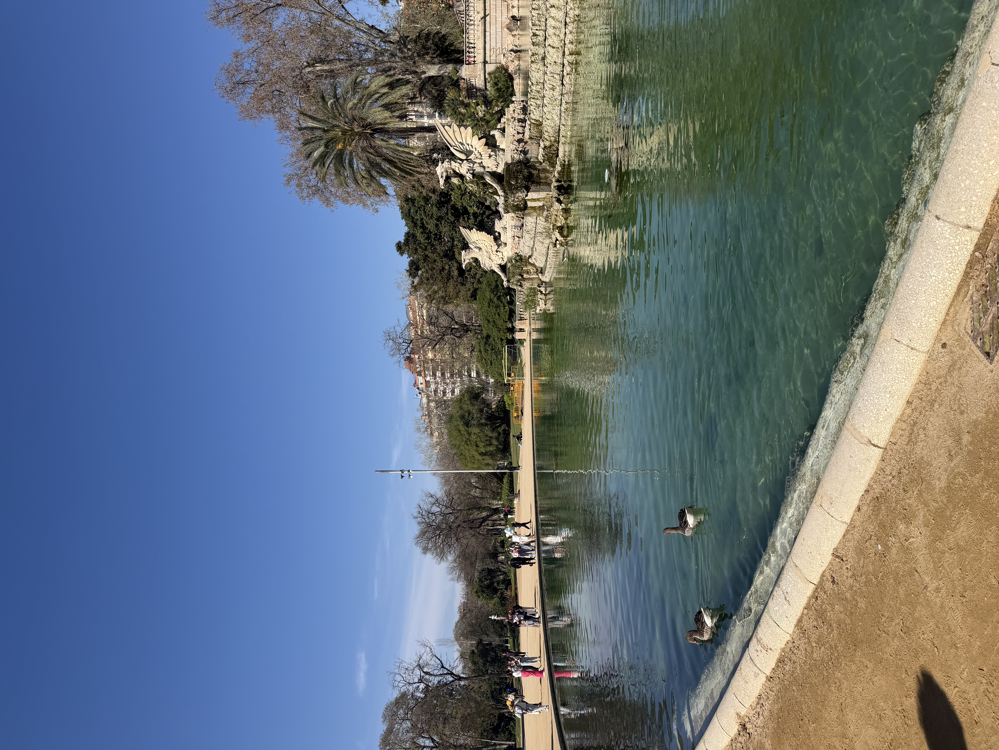
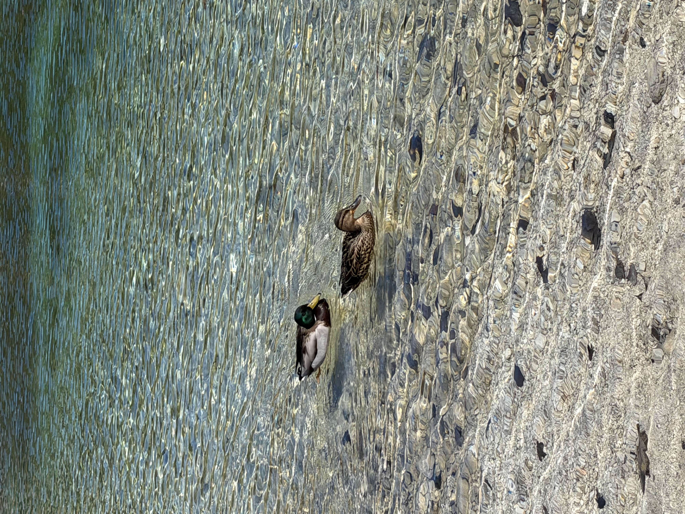
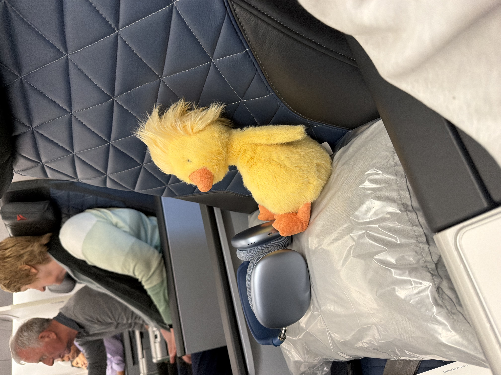

From January to May, Elle traveled to thirteen countries and saw her favorite animal, ducks, in almost every one. Her favorite photos of these ducks have been ranked from least favorite to most.

9. These two ducks were spotted in Lugano, Switzerland. While Elle found the town and food extremely underwhelming, she was extremely delighted to find plenty of ducks floating in the water.

8. Elle was pleased to find that Amsterdam was centered around the famous Vondelpark and in it, a plethora of ducks were floating in its many waters. There were many duck couples and families to watch while eating Albert Heijn bread.

7. Elle found this fluffy duck at a Hungarian island zoo. It was encaged with many other types of birds, but of course this one stood out.

6. To be frank, Elle is unsure if this is a duck. However, she could not stand to leave out the photo of this creature she happened across while in Princess Diana's English gardens.

5. These two ducks were spotted by Elle and her travel companions on a drizzly day while in Paris. While not seen in the photo, if you were to look straight up, you would see the underbelly of the Eiffel Tower. These Parisian ducks are probably eating a baguette right now.

4. On an impromptu day trip to Lake Como, Elle saw what must have been millions of ducks in the lake and near the shores. She discovered that ducks will interact with other bird species such as swans.

3. On one of her favorite trips, Elle noticed that despite its small number of inland bodies of water, Spain still welcomed the ducks. In local fountains and structural ponds, many different kinds of ducks were seen.

2. While on a local-guided hike in the Slovenian mountains, Elle saw stunning clear waters that were home to a lovely family of ducks. The views from this day, including the ducks, are some of Elle's favorites she saw while abroad.

1. While some may say this duck should not count, Don the duck is Elle's favorite. Adopted in London, Don traveled back to the States with Elle, where he is currently enjoying Spokane.
Built by Elle Pratt · BMIS 235